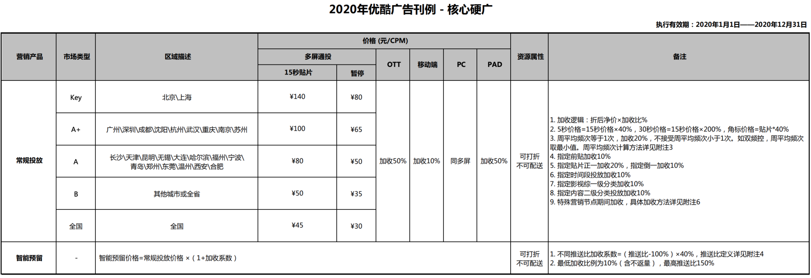
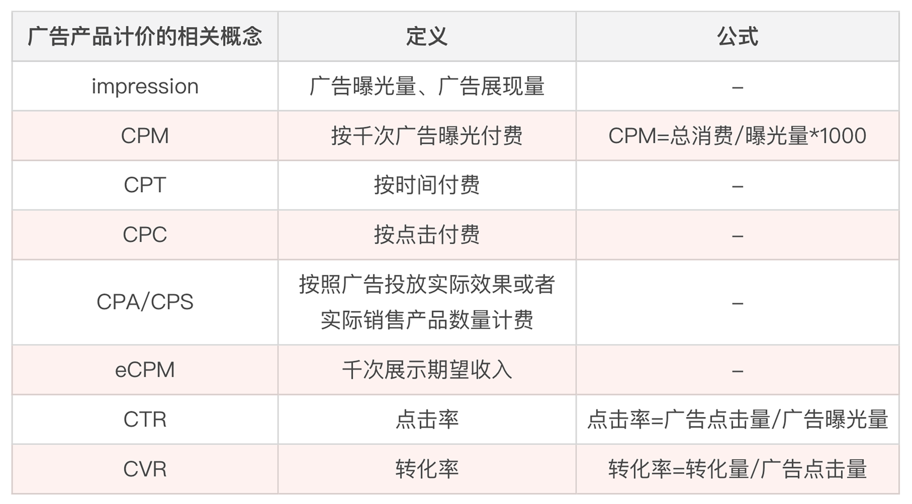
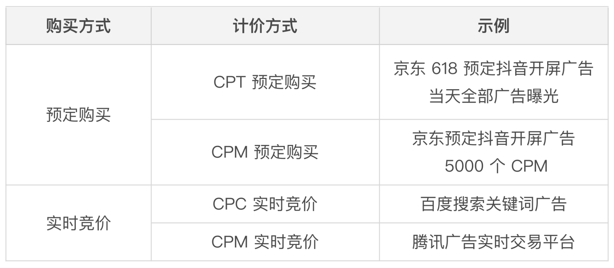

- 00 开篇词 作为一名互联网人，你为什么必须了解广告产品？.md.html
- 01 业务逻辑：广告产品的前世今生和商业模式是怎样的？.md.html
- 02 业务链条：广告主、媒体、第三方等分别如何看待广告产品？.md.html
- 03 头部玩家：从BAT到跳动的字节，广告产品有哪些变化与发展趋势？.md.html
- 04 产品体系：互联网大厂的广告产品存在哪些共性和区别？.md.html
- 05 变现模式：什么样的产品适合采用广告模式变现？.md.html
- 06 产品路线：大厂和小厂的广告产品发展路线有什么区别？.md.html
- 07 计价与效果（上）：如何制定合理的计价方式？.md.html
- 08 计价与效果（下）：如何制定合理的效果评估指标？.md.html
- 09 效果优化：如何一步步从提升曝光量深入到提升销量？.md.html
- 10 流量优化：如何兼顾广告收入和用户体验？.md.html
- 11 物料生产：如何满足广告主的创意需求？.md.html
- 12 精准定向：如何建立一个成熟的用户标签体系？.md.html
- 13 转化优化：互联网大厂如何利用算法优化广告效果？.md.html
- 14 程序化交易：程序化交易是否可以提升广告效果？.md.html
- 15 需求调研：广告产品潜在需求的调研流程是怎样的？.md.html
- 16 平台建设：如何从0到1建立一个完整的广告产品平台？.md.html
- 17 职业发展：新人入行，如何判断自己是否适合做广告产品？.md.html
- 18 团队建设：如何搭建一个高效的广告产品团队？.md.html
- 19 跨团队合作：产研团队和销售端、媒体端、市场端如何合作？.md.html
- 20 产品运营：不同发展阶段如何制定业务目标和运营策略？.md.html
- 21 广告产品彩蛋：课程答疑与推荐书目.md.html
- 结束语 你想要成为什么样的互联网广告产品人？.md.html
- 捐赠
07 计价与效果（上）：如何制定合理的计价方式？
你好，我是郭谊。
在学完广告产品行业模块的内容后，我们了解了广告产品整个行业的现状。从这一讲开始，我们要一步步地深入到广告产品执行层面的各项工作了。这是一个广告产品人的基本功，也是我们必须要了解和学习的内容。今天我们就从最基本的，同时也是最重要的环节——广告产品的计价与效果展开学习。
要知道任何一家公司一旦建立起相对完整的广告产品体系，其首要的业务目标就是营收。这是整个广告产品团队要面临的第一要务。所以，今天我们就来重点解决这个问题：广告产品应该怎么去估算收入、计算价格？
要解答这个问题，你首先要了解的是：广告产品的市场中虽然有巨头，但不会形成一个垄断市场，这其中有两个原因：第一，互联网广告产品头部玩家之间存在激烈的竞争；第二，互联网领域会不断涌现新的媒体平台，而且互联网之外，还有电视、杂志等传统媒体。
所以，媒体平台的广告产品的定价必须符合市场竞争规律，不可能无限上涨。因此，广告产品的计价以及效果指标是稳定保持在一定范围内的。这样我们也能比较准确地估算广告产品的收入。
广告产品如何估算收入
那么我们应该怎么去估算广告产品的收入呢？
其实，估算广告产品收入的方法不止有一种。我们可以分别从需求侧和供给侧去计算。虽然计价方式和供给侧，也就是媒体平台这一边的关系更加紧密，但是这两种方式我们都需要了解。
需求侧
从需求侧，也就是广告主侧，来计算广告产品的总收入，公式是这样的：
广告产品的总收入=单个广告主贡献的广告收入*广告主数量
如果我们按照这个公式来估算广告产品的收入，那么增加广告收入的方法至少有两种：一个是提升单个广告主贡献的广告收入；另一个就是增加广告主的数量。这两部分的提升主要靠销售团队，因此这个公式在广告产品的销售体系内用得比较多。
供给侧
我们也可以从供给侧，也就是媒体或广告平台侧进行计算：
广告产品的总收入=千次曝光单价*曝光量/1000
里面有一个非常重要的概念“千次曝光单价”，这里我们为什么要用“千次曝光单价”，而不是直接用“单次曝光单价”呢？
这是因为广告产品的曝光量相对比较大，如果用单次曝光单价，金额太低，可能连一分钱都不到。为了方便计算，业内习惯直接使用“千次曝光单价”。
如果我们按照这个公式来估算广告产品的收入，那么增加广告收入的方法也有两种：一个是提升千次曝光的广告单价；另一个是增加广告曝光量。和需求侧的公式相比，供给侧的公式和广告产品本身的联系更加紧密。针对这个公式，我们有很多可优化的空间和手段，所以广告产品团队内部普遍使用这个公式。
广告产品计价的相关概念
如果只知道千次曝光单价和曝光量这两个指标，那么无论是用于计价还是效果评估都太过粗略了。那我们怎么进一步细化收入估算、计价和效果评估呢？别急，我们需要先了解一些广告产品的基本概念。
- impression：又叫曝光量、广告曝光量、广告展现量，一般向用户展现一次广告记为一次曝光。impression不仅可以作为广告展现量的计数，也可以作为广告库存量的计数。在实际工作中，因为impression量级实在过于庞大，所以我们经常把impression除以1000后的数字作为计数项。
- CPM：Cost per Mille / Cost per Thousand Impression，是一种按千次广告曝光付费的结算方式，是针对广告主而言的，指的是广告主为一千次广告曝光付出的成本。CPM=总消费/曝光量 * 1000。举例来说，某广告主一次投放了10万元，曝光1000万次，那这次投放的CPM=10万元/1000万次 * 1000=10元，千次广告曝光付费10元。
像微信的朋友圈广告、爱优腾的视频贴片广告，经常采用这种计价方式。我们以2020年优酷广告为例，全国范围内通投的15秒视频贴片广告的CPM刊例价格是45元，也就是广告主要购买一千次广告曝光，在未打折的前提下需要支付45元。

- CPT：Cost per Time，按时间付费，例如按天或者包月付费，这种广告付费形式在互联网广告发展的早期，还有媒体平台变现的早期很常见。媒体平台广告产品体系成熟后，虽然CPT会继续存在，但是所占比例会逐渐减小。
- CPC：Cost per Click，按点击付费，只有当用户点击广告时才计费，往往和竞价广告相结合。百度搜索推广广告、淘宝直通车广告都采用这种付费方式。
- CPA/CPS：Cost per Action/Cost per Sales，按广告投放实际效果或实际销售产品数量计费，它们的区别在于CPA定义的投放效果不一定是产品销售数量，也可能是App激活量、用户销售线索回收量等等。因为无法控制最终结果，大的媒体平台一般不接受这种付费方式，但是很多中小媒体或者媒体联盟会采用这种方式，用来吸引广告主的预算。
- eCPM：effective Cost per Mille，在CPM前面加了一个单词effective，又有什么不同含义呢？eCPM指的是千次展示有效收入，也就是媒体平台在千次广告曝光中获取的实际收益。eCPM和CPM最大的区别在于CPM是从广告主端来看的，是看广告主为千次广告曝光付多少钱；而eCPM是从媒体端来看的，是看媒体平台从千次广告曝光中实际能赚到多少钱。对媒体平台而言，eCPM越高越好，但对广告主而言，CPM过高，广告主是不会接受的。
前面我们提到了，除了CPM之外，广告产品还存在CPT、CPC、CPA、CPS等多种计价模式，所以eCPM的具体计算方法，也会根据计价方式不同而有所不同，这个我们一会儿再展开讨论。
- 点击率：Click-Through-Rate，简称CTR。点击率=广告点击量/广告曝光量。比如说，如果一个广告曝光了100次，有5次点击，那么点击率是5%。
- 转化率：Conversion Rate，简称CVR，转化率=转化量/广告点击量，转化可以由广告主或者媒体平台自定义，常见的有：App的激活率，激活指的是用户完成了一系列App广告主自定义的核心操作。
例如支付类App可以把用户注册登录并完成第一步付款记为一次激活，并且以一次激活作为一次转化事件。那么，如果这个App投放的广告得到了100次点击，其中完成了2次转化，那这次广告投放的转化率是2%。其他常见的转化事件还有用户注册、提供有效用户手机号、用户购买商品等等。

eCPM的计算方式
不同的计价方式，eCPM的计算方式也不同。比如：
CPM计价广告的eCPM=CPM价格；
CPC计价广告的eCPM=广告主对每次广告点击的出价 * 预估点击率 * 1000，把这个公式再代入到广告收入媒体侧的通用公式中，则：广告产品的总收入=千次曝光单价 * 曝光量/1000=广告主对每次广告点击的出价 * 预估点击率 * 曝光量；
CPA/CPS计价广告的eCPM=广告主对于每次转化或购买的出价 * 预估转化率 * 预估点击率 * 1000，把这个公式再代入到广告收入媒体侧的通用公式中，则：广告产品的总收入=千次曝光单价 * 曝光量/1000=广告主对每次转化或购买的出价 * 预估转化率*预估点击率 * 曝光量。
在第2讲中，我们说过，大的媒体平台一般不接受直接以CPA或者CPS计价的广告售卖方式。但是，为了更好地满足广告主的需求，从广告主那里争取更多的预算，媒体平台也会考虑优化CPA和CPS数据。
以上就是我们需要了解的关于计价方面的相关概念。我们可以看到无论什么样的计价方式都涉及了大量的数据，那这些数据来自什么地方呢？
一般来说，大多数广告产品的数据来自媒体平台，我们通常会按照媒体平台提供的数据进行计价。但是也有例外的情况，例如很多长视频平台的视频贴片广告，在面对某些大广告主时，会同意按照广告主聘请的第三方数据监测公司提供的数据计价。
一方面是因为在业界视频贴片广告和传统电视节目中的贴片广告被归为了一类，所以继承了传统电视广告售卖的一些策略；另一方面也是由于大广告主有更强的谈判能力。不过，绝大多数情况下，强势的媒体平台是不会同意的。比如我在百度时曾经参与过和宝洁公司的谈判，最终我们还是坚持按照百度自身的数据统计结果进行结算。
广告产品的售卖方式
如果我们想购买一个大的媒体平台的广告产品，我们不光要了解广告产品的计价方式，还要考虑它的广告产品的售卖方式。我们要知道这个广告产品在售卖时，广告主是按照合约购买购买，还是实时竞价购买？
合约购买
合约购买：Guaranteed Delivery，简称GD，以合约购买形式售卖的广告也经常被叫做GD广告、合约广告等。按照媒体平台和广告主约定的价格，广告主预先采购固定数量的广告产品，这个价格通常以媒体平台制定的广告产品刊例价格为基础，结合折扣、促销等政策，由双方提前约定的固定价格。
一般，我们结合计价方式，把合约广告分为按照CPT进行合约购买和按照CPM进行合约购买两种。一旦签订广告产品购买合同，媒体平台必须在规定的时间段，给广告主预留这个时段内他们约定的广告曝光库存。例如，京东作为广告主，为了618店庆，向字节跳动预定抖音App开屏广告618当天从0点到24点的全部广告曝光，这就是一个单天的CPT合约购买。如果京东不按全天包断，而是向抖音预定了618当天的5000个CPM，也就是500万次广告曝光，那就是一次5000个CPM的合约购买。
实时竞价
实时竞价也叫bidding，以biddding形式售卖的广告就叫做实时竞价广告。广告主预先充了一定的金额到媒体平台的广告投放平台中，然后按照自己的成本和收益预估，设定购买价格，像股票市场或者拍卖市场的实时交易那样，进行竞价购买。
一般来说，在激烈的竞争下，出价越高的一方，购买到的广告数量越多。实时竞价广告常见的有按照CPC实时竞价（CPC bidding）和按照CPM实时竞价（CPM bidding）两种方式，例如，百度搜索关键词广告就是CPC实时竞价广告。

在主流媒体平台上，最常见的有CPT合约购买、CPM合约购买、CPC实时竞价和CPM实时竞价这四种广告售卖方式，那有没有CPC合约购买这种方式呢？
实际上在主流媒体平台一般不存在CPC合约购买的方式。因为这样的方式会让媒体平台既要帮广告主控制成本，又要跟广告主承诺数量。如果媒体平台广泛接受CPC合约购买的方式，就相当于把自己在北京三环的房子一万一平卖给广告主，那广告主肯定非常乐意，有多少买多少。所以媒体平台为了保障自己的收益，不接受CPC合约购买的方式。
从广告主的角度来说，因为合约购买和实时竞价时的首要目标不同。广告主选择合约购买时，无论是CPT还是CPM，都表明广告主更加看重曝光量。反之，如果广告主选择实时竞价，那广告主对出价就掌握了主动权，因此，广告主实际上是选择了优先保障广告成本，先看一下自己当前的出价能买到多少广告曝光量。如果后续广告主希望得到更多广告曝光量，那他必须提高出价，放宽对成本的控制。
这也就是为什么所有大效果广告主，不管是早期的平安保险、京东，还是后来的VIPKID、作业帮，广告投放的成本都是越来越高。主要是因为随着企业发展和广告投放规模的扩大，他们选择为了曝光量在成本方面作出让步。
说到这里，相信你也可以理解了，如果我们换算一下不同售卖方式的eCPM，那么合约购买的eCPM一般要高于实时竞价的eCPM。因为一方面，广告主在合约购买时，要优先保障曝光量，会更愿意接受较高的eCPM；另一方面，媒体平台也需要考虑到，这些被预定出去的广告资源，或许会有一部分在未来的实时竞价中可以拍卖到比预定购买的固定价格更高的价格，所以在预先定价时，要预留出一定的空间（buffer）对冲掉这样的风险。
重点回顾
好，这就是今天我们学习的关于广告产品计价方面的内容，涉及了很多重要的概念和公式。接下来，我们一起来复习一下吧！
在这一讲中，我们学习了广告产品收入和计价相关的基本概念，掌握了从需求侧和供给侧计算广告产品的两个公式、广告计价的一系列重点概念和广告产品的两种售卖方式。
主流媒体平台主要的广告产品计价方式包括CPT（按时间付费）、CPM（按千次展示付费）、CPC（按点击付费），另外还有一些中小平台会采用的CPA/CPS（按效果付费）的计价方式。媒体平台的eCPM会根据计价方式的不同而有所变化，但最终目的都是一样的，就是尽可能地追求更高的eCPM。
结合目前的计价模式，现在主要的广告产品售卖方式包括CPT合约购买、CPM合约购买、CPC实时竞价、CPM实时竞价。这些售卖方式，实际上是在广告主和媒体平台双方的博弈中逐渐形成的。作为媒体平台，要给自身的广告产品制定合理的计价模式，既要保证自己的收益，也要对广告主形成一定的吸引力；作为广告主呢，则需要根据公司目前的预算和推广目标选择适合自己的购买方式，做到利益最大化。
实战演练
今天我们学习了很多概念和公式，不知道你掌握得怎么样？接下来我给你出几道题来验证一下学习效果吧！
- 广告产品A，计价方式是CPC竞价，过去一个季度广告客户平均出价为0.9元，广告预估点击率为0.9%，过去一个季度，广告产品A的eCPM是多少元？
- 广告产品B，计价方式为CPM合约购买，CPM刊例单价为80元，某广告主通过广告代理公司以刊例价格的5折购买到手，通过广告合同预定了未来一周投放600个CPM，那么，就这一次投放而言，广告产品B的eCPM是多少元？
- 广告产品C，是某App刚开始尝试做广告变现推出的广告产品，找了一家广告代理公司，决定先以CPA的计价方式售卖，尝试一个月后，统计发现：广告客户对CPA的平均出价为78元，平均每10,000名用户看到广告后，有120名用户点击了广告并跳转到广告主的着陆页，之后，其中1名用户有了后续转化的行为。请问，广告产品C在过去一个月里，点击率是多少？转化率是多少？eCPM是多少？
请把你的答案写在评论区里吧，如果有任何疑惑也欢迎你在留言区讨论，也欢迎你把这节课分享给需要的朋友，我们下节课再见！
© 2019 - 2023 Liangliang Lee. Powered by gin and hexo-theme-book.